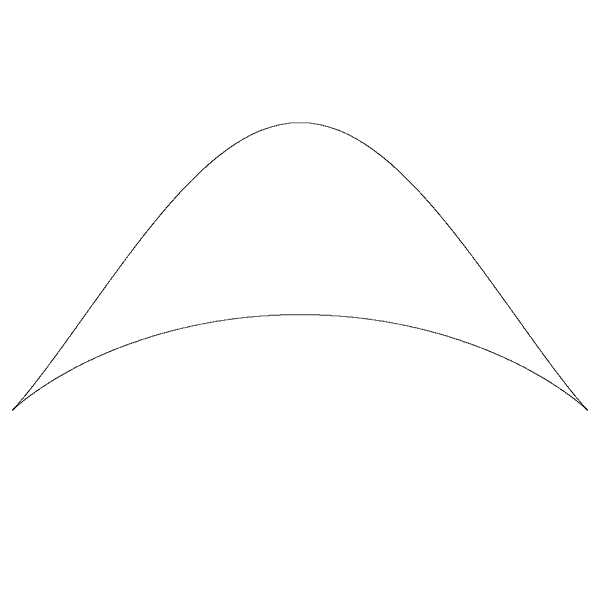

Bicorn Curve
By
Paul Bourke
January 2001
x = sin(t)
y = cos(t)
2
(2 + cos(t)) / (3 + sin(t)
2
)
-pi <= t <= pi

Also known as the "cocked hat", it was first documented by Sylvester around 1864 and Cayley in 1867.